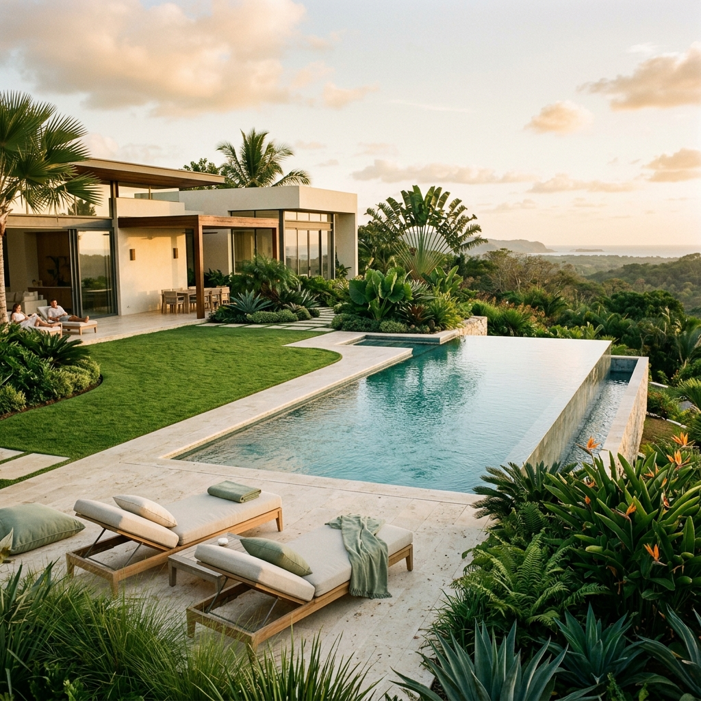
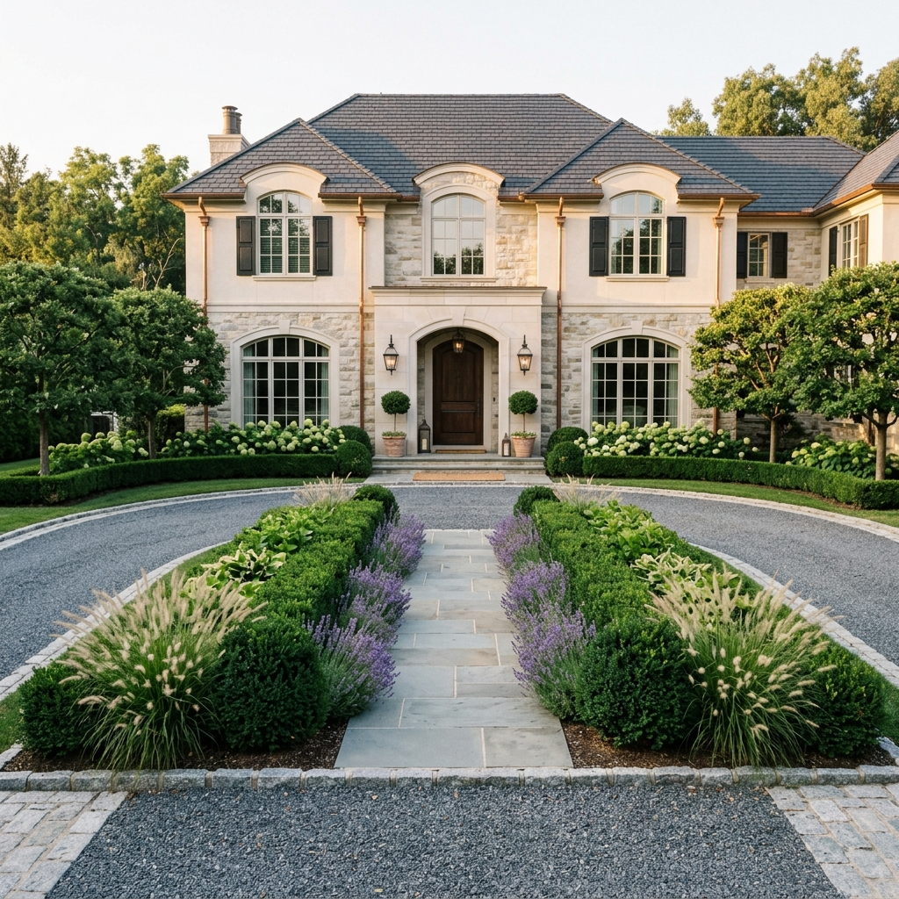
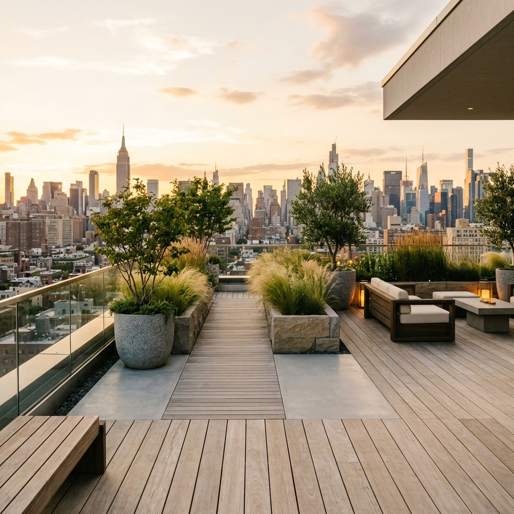
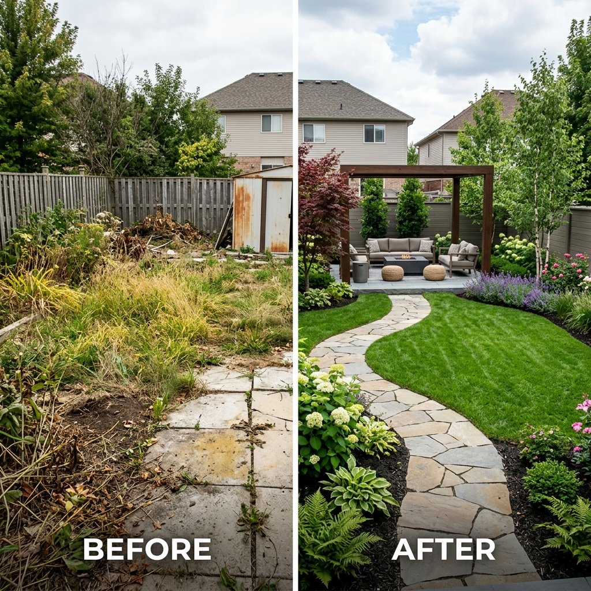
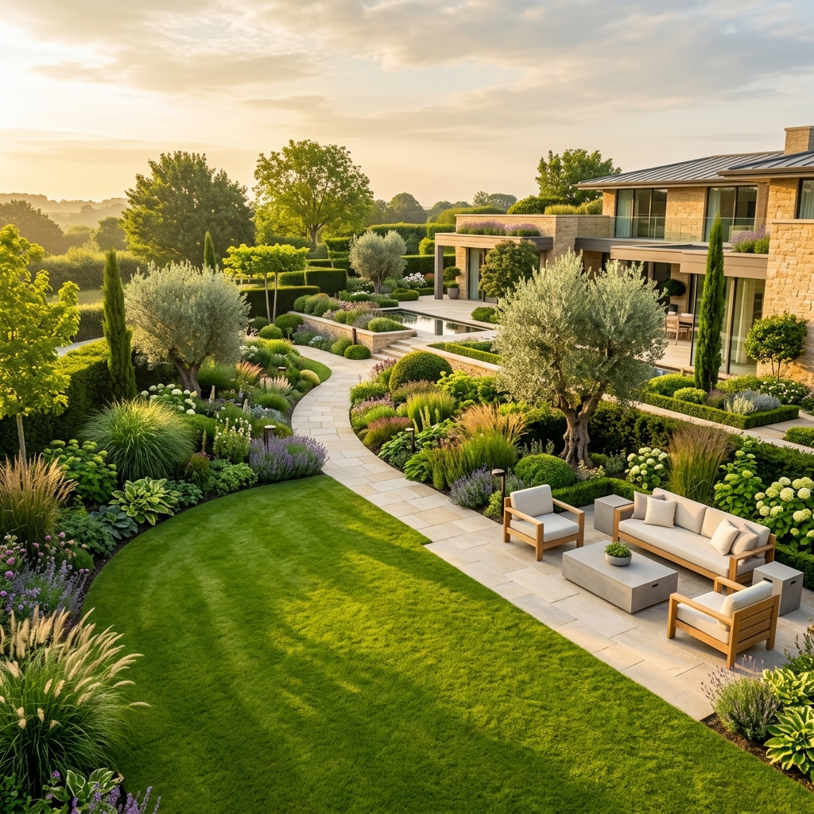

"Detalhe é filosofia, não acabamento."
— Antônio Costa Dcôr/ Nossa Filosofia
Cada jardim conta
uma história única.
Não fazemos projetos: criamos narrativas vivas. Cada textura de pedra, cada espécie selecionada e cada ângulo de luz foi pensado para que o visitante sinta algo que vai além da visão.
Estudamos o microclima do seu terreno, a personalidade de quem o habita e o diálogo com a arquitetura existente para criar uma composição que respira e evolui ao longo das estações.
O que
fazemos melhor.
Cada serviço é uma camada
de sofisticação aplicada ao seu espaço.

Projeto Conceitual & 3D
Visualização foto-realista do seu jardim antes que uma pedra seja movida. Zero surpresas, zero riscos.
Ver mais +
Jardins Residenciais
Desde jardins intimistas até grandes propriedades, cada escala tem sua grandiosidade.

Terraços & Green Roofs
Transformamos m² urbanos desperdiçados em santuários botânicos verticais.

Paisagismo Corporativo
Sedes e fachadas que comunicam sofisticação e reforçam a identidade da marca.

Irrigação Inteligente
Sistemas automatizados que garantem saúde e beleza com economia máxima de água.

Manutenção Premium
Programas de cuidado contínuo para que seu jardim se mantenha impecável nas quatro estações.
/ Portfólio Selecionado
Nosso
Legado.
6 obras que definiram gerações de excelência botânica em São Paulo e no Brasil.

Villa das Águas
Residencial · Jardins, São Paulo
Residência Botero
Fazenda Boa Vista, SP

Façade Minimalista
Leblon, Rio de Janeiro
Corpo Verde
Itaim Bibi, São Paulo

Sky Garden
Moema, São Paulo
Recanto Nativo
Alphaville, SP
/ A Transformação
Antes e depois de uma decisão.

Antes
"Detalhe é filosofia,
não acabamento."
/ O Fundador
Antônio
Costa Dcôr
Desde 2006, Antônio Costa Dcôr constrói um pensamento que vai além do projeto. Para ele, jardim não é paisagem — é palco de vida. Com a mesma filosofia que revolucionou o design de móveis planejados na Mobiano, Antônio trouxe à Greensy uma abordagem singular: cada espaço externo deve ter a mesma intencionalidade e precisão de um ambiente interno de alto padrão.
Formado em Arquitetura e Urbanismo, com especializações em biofilia e design regenerativo em São Paulo e Barcelona, Antônio acredita que natureza e sofisticação não são opostos — são a mesma coisa em seu estado mais puro.
Biofilia
Integrar vida vegetal ao cotidiano humano não é luxo, é necessidade.
Precisão
Cada millímetro de um jardim Greensy carrega intenção e significado.
Legado
Criamos jardins que crescem por décadas, não projetos de curta vida.
/ Depoimentos
O que dizem nossos clientes.
"A Greensy não apenas criou o meu jardim — criou o espaço onde minha família vive seus melhores momentos. Uma experiência transformadora do início ao fim."
"Profissionalismo absoluto. O projeto 3D nos deu total segurança, e o resultado superou qualquer expectativa. Antônio e sua equipe são verdadeiros artistas."
"Implantamos a Greensy na nossa sede e o impacto foi imediato. O ambiente ficou completamente diferente — e nossos colaboradores notaram desde o primeiro dia."

/ Seu Projeto Começa Aqui
Pronto para viver
rodeado de beleza?
Consultoria inicial gratuita. Venha criar com a Greensy o jardim que você sempre sonhou.